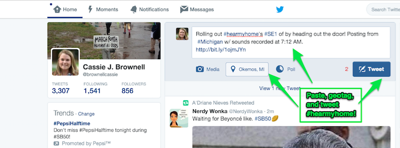

Examining everyday people produced soundscapes, #hearmyhome inquires how hearing difference and listening to communities may re-educate the senses and attune us towards cultural difference. Ultimately developing materials that hear, recognize, and sustain community literacies and cultural rhetorics, #hearmyhome asks us to take heed of the frequencies and rhythms of culture as we architect, design, and teach towards more equitable landscapes for learning.
Collaboration
Focusing on “everyday” cultural heritage, #hearmyhome is a collaborative project that invites youth and adults to earwitness community through expansive personal learning networks (PLN). Illustrated by our open-networked soundscapes map, #hearmyhome is an affinity space wherein participants share both knowledge and life experiences (hosted and inspired through sonic events) to form interpersonal relationships and collaboratively create a fuller understanding of community and culture. As the community expands through new partnerships and members, we hope it serves as a hub connecting participants with research opportunities, (g)local initiatives, and online resources and tools.
Pedagogy/Praxis
Ultimately a pedagogical endeavor, one of #hearmyhome’s larger goals is to develop curricular materials for teachers via the collaborative network and shared space. Please join our efforts by designing, architecting, and inventing resources and experiences to be shared and remixed with fellow teachers and sonic composers. As an “open” project, resources will be shared widely as we hope to develop powerful practices of hearing, listening, and witnessing sound across communities. Please check back for updates on the curricular resources, and if you are an educator, please consider contributing to this crowd-sourced effort.
Research
Supported by the Cultural Heritage Informatics Fellowship and the NCTE CEE Research Initiative, #hearmyhome is led by a team of educational researchers and K-12 teachers interested in the sonic possibilities of writing with sound. Hanging by a #hashtag, the research component of the project investigates how the soundscapes of the everyday attune us towards cultural difference. #hearmyhome, however, is open to everyone regardless of participation in the more formal study. Researchers will always seek members’ consent before sharing any work beyond the online community networked collaborative. For more on this, please see our standards of research statement
Get Involved
Connect! Join Twitter, Instagram, and/or Vine to share your sounds
Read! Browse the sonic event for the week
Make! Create your soundscape for the week's sonic event
Tag! Index your soundscape using the #hearmyhome tag
Share! Connect with others by sharing your soundscape with the #hearmyhome community
Comment and Reflect! Listen to other #hearmyhome members and earwitness their making
Browse Map
2016 Sonic Events
Current Event
#SE6 - Remixing Resonances
Week 6: March 13 - March 19, 2016
This week, in comparison to the first five sonic events, we are not asking you to produce something “new” per se, but to remix a resonance of another #hearmyhome participant’s product. As the sixth sonic event (#SE6) in our series, Remixing Resonances invites you to reflect on your listening. Choose a product/participant that you’ve earwitnessed alongside of and strike a chord by remediating and/or remixing their soundscape or multimodal composition.
In remediating or remixing another #hearmyhome collaborator’s product, we hope to give voice to your unique vision as a mixmaster and audio artist. Take for example, Jon’s remix collage of Steph’s #SE5 masterpiece. Taking her sound symphony of mundane music, Jon created a blacked-out poem highlighting his response and listening experience. For some, remediating and remixing through alternative modes may be one avenue to experiment and play, but it is not the only way. We are eager to see your innovation.
As always, be sure to tag your tweet, photo, or post with #hearmyhome, indicating that it is in response to #SE6 (sonic event 6). We look forward to hearing the echoes of remediation and attuning towards your creative voice and vision.
Past Events
#SE5 - Mundane Music & Movement: Sounds that Stick
Week 5: March 6 - March 12, 2016
Do you ever have a buzzing in your ear? A persistent sound within your workplace? For our fifth event, we invite you to consider the mundane music of the everyday. In other words, how does the tick of the clock, the tapping of keys, or the slamming of lockers fill the ?between? space of your every day and the tempo of time?
Across the past four events, we have asked you to highlight the earliest sounds of the day, the ambient noise within the quiet of a moment, the rhythmic rituals of your home, and to share a visual of listening. But, what occurs in the ?in-between?? Is it the ring of a bell or timer? The screams of children or screeching of wheels on the street? Does it include the closing of a drawer, the shuffle of feet, or the muffled cough of a colleague? Maybe snow under feet or the tapping of toes to a beat?
This week we are also pairing with our friends at #WalkMyWorld. The folks at #WalkMyWorld have raised some great questions this week about what constitutes home and they'll be joining us as we explore the mundane music of sounds that stick. Be sure to visit their site to learn more about what they've discovered while 'walking' in 2016!
As you listen this week, consider the sounds surrounding you as you pass between rooms, buildings, and streets. Capture the sonic experiences. As in previous events, upload your contribution using the #hearmyhome hashtag, but be sure to also include the hashtag for #WalkMyWorld as well!
Sonic Event 5 (#SE5) also marks the mid-point of #hearmyhome. We have loved getting to (re)learn to listen with you and look forward to what's to come in the next five weeks!
#SE4 - Visualizing Listening
Week 4: February 28 - March 5, 2016
This week we invite you to reflect and consider how sound is not only an aurally stimulating event, but also a visually scintillating phenomenon. If you don’t believe us, take Nigel Stanford’s Cymatics as an example!
Nigel Stanford’s Cymatics:
Using your iPhone, tablet, and/or mobile media tool of choice, Week 4’s sonic event asks you to snap a picture, stream a video, or write rich textual descriptions that capture the feeling of sound and listening, however you conceive of it. For some, listening may look like a pair of headphones, an object that literally streams the sonic soundtrack of your workday. For others, like the deaf and hard of hearing, listening may be an activity decoded from sight, touch, and a more embodied sensorium. Therefore, we encourage you to play with the senses as you compose and participate in this week’s event.
As always, tag your composition with #hearmyhome, turn geotagging and location services on, and share it with us! We’re interested in how seeing listening may re-educate the senses!
#SE3 - Rhythmic Rituals
Week 3: February 21 - February 27, 2016
From the staccato sounds of hitting the snooze button to the rhythmic rituals of locking the door and/or taking the bus, this week we ask you to consider the role and purpose that “ritual” has in your everyday.
Wargo's #SE3 Example:
Rituals, as histories often show, arise from the rhythms of place. The sun, for example, comes into our garden or breaks through our window. We either move toward or away from it for relief. At first our movements rehearse a direct search for comfort, an ease of inhabiting a space. But eventually, simple movements may be expanded in detail to express our feelings about life in the place. Sound attunes us to home. We dwell. It is this connection between rhythm and ritual that holds great potential for dwellers to act with imagination. So, we ask, what are the rhythmic rituals of home?
Using a tool of your choice, capture and record a soundscape that illustrates a personal ritual. As you compose the piece, consider how its varying dimensions (e.g., place, time, geographic location, etc.) intersect. What is the narrative and story of your ritual?
#SE2 - Earwitnessing the Everyday: A Sound Symphony
Week 2: February 14 - February 20, 2016
In Week 2 we ask you to take American composer John Cage’s lead and create an everyday sound symphony of your own. For those of you unfamiliar with the artist, Cage became quite famous in 1952 when his three-movement score 4’33 took audience members by storm. Rather than having the full orchestra play, Cage used the ambient noise of the crowd as the main tonal event.
John Cage's "On Silence"
Using the social sharing tool of your choosing (e.g., Instagram, Twitter, Soundcloud, etc.) record an “earwitness”-ing event of your own. Your score, like Cage’s, should use the ambient soundscapes of your everyday as a starting point. In designing this Week’s sonic event, we were struck by others’ renewed focus on sound and the architecture of everyday experiences. As always, tag your composition with #hearmyhome and #SE2, turn geotagging and location services on, and share it! We’re interested in bearing wit(h)ness to your everyday sound symphonies.
#SE1 - Starting Sounds: Waking Up and Rolling Out with #hearmyhome
Week 1: February 7 - February 13, 2016
From the shoveling of snow or the whimpers of a dog to a call to prayer and/or shouts from a small child, we open #hearmyhome with the sounds that start your day. How does the world sound as you just wake up? What are the sounds as you roll out the door? In this first event, we ask you to share with us the sounds of the start of your day--be that an alarm at 6 AM or on your drive for the night shift. No matter whether your home is in rural Montana or on the bustling streets of London, we ask you to share the first sounds of the day.
With this being the first sonic event (#SE1) in our series, we ask that you not only include the sounds of your day, but also take a quick second to introduce yourself and share the local time for your recording. And, if you’re comfortable doing so, be sure to include the geotag for the town or city you call “home” in when you upload your sound. Be sure to #tag your post with #hearmyhome and index it with #SE1.
Cassie's #SE1 Example:
Or;

As we shared earlier, the sounds you share will serve as contributions to the larger open-network we will collaboratively create and map. Follow the hashtag #hearmyhome on Twitter, Instagram, and Facebook or revisit our site throughout the week to listen to homes from across the globe!
So What?
As American novelist Eudora Welty wrote, “Long before I wrote stories, I listened for stories. Listening for them is something more acute than listening to them.” This everyday cultural heritage project begs participants to not only listen to, but for the stories that emerge and resonate in building a collective community of sonic composers. We believe attuning towards difference and “hearing” homes and communities will help remediate learning about culture/s and community/ies in new ways.
Resources
As a project interested in developing an archive for educators and youth writers committed to writing culture with and through sound, we are always looking for the best sonic resources. Please lurk, learn, and contribute to our running reference list.
Contact
Want to participate in the project?
#hearmyhome is led by a team of graduate students at Michigan State University. Jon M. Wargo (PI), an International Literacy Association (ILA) 30 Under 30 awardee, is a University Fellow and doctoral candidate in Curriculum, Instruction, and Teacher Education. Cassie J. Brownell (PI) is also a doctoral student in Curriculum, Instruction, and Teacher Education and RCAH Fellow. If you are interested in joining the #hearmyhome team please email us!